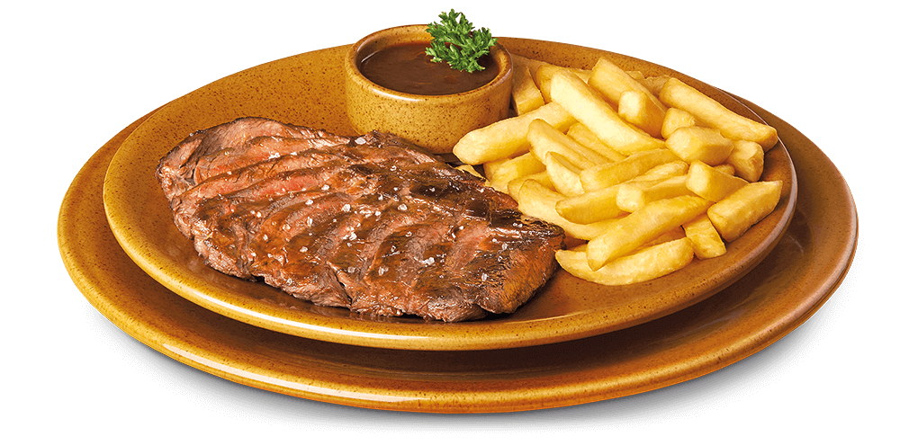

|
INICIO | TEX-MEX | ENSALADAS | CARNES | HAMBURGUESAS | POSTRES | SOCIAL |
BEEF BONE
Carne de vacuno cocinada lentamente |
 |
FLANK STEAK 300 GRS.
Corte argentino, vacío de vacuno marinado en cerveza negra. |
|
 |
NEWYORKER STEAK 325 GRS.
Jugoso entrecotte sazonado y preparado en nuestra parrilla. |
SALISBURY STEAKS
Sabrosa carne de vacuno aderezada, |
|
NATIONAL RIBS
Costillas de cerdo ahumadas a la parrilla. |
|||
|
Guarniciones: The Newyorker, el Flanksteak y el Salisbury Steaks vienen acompañados de patatas fritas, puedes cambiarlas por patata asada con crema agria. Nuestras carnes se sirven al punto de sal. |
|||